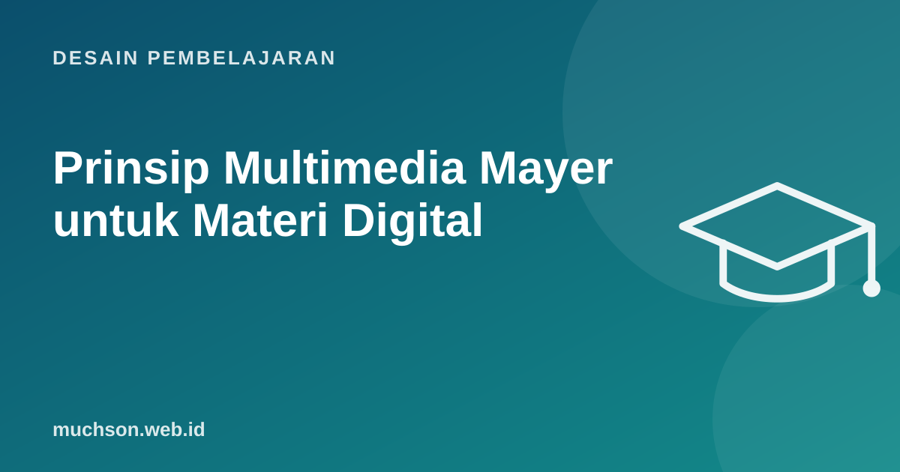

Beranda › Artikel › Desain Pembelajaran
Desain PembelajaranPrinsip Multimedia Mayer untuk Materi Digital
Richard Mayer dan rekannya menguji ratusan variasi materi belajar: dengan atau tanpa gambar, narasi atau teks, musik latar atau tidak. Dari eksperimen itu lahir teori kognitif pembelajaran multimedia dan sekumpulan prinsip praktis. Prinsip-prinsip ini langsung bisa dipakai untuk memperbaiki slide dan video Anda besok.

Ide dasarnya
Manusia memproses informasi lewat dua saluran: visual (gambar, teks tertulis) dan verbal-auditori (kata yang didengar). Kapasitas tiap saluran terbatas, dan belajar terjadi ketika kita aktif memilih, menyusun, dan menghubungkan informasi dari kedua saluran dengan pengetahuan lama.
Prinsip multimedia: orang belajar lebih baik dari kata dan gambar yang relevan daripada dari kata saja.
Prinsip untuk mengurangi pemrosesan yang tidak perlu
Prinsip untuk mengelola materi yang rumit
| Prinsip | Arti | Contoh |
|---|---|---|
| Segmenting | Pecah menjadi bagian yang dikendalikan peserta | Video 5 bagian dengan tombol lanjut, bukan satu video 40 menit |
| Pre-training | Kenalkan istilah dan komponen sebelum proses | Kenalkan bagian-bagian dashboard sebelum alur kerja lengkap |
| Modality | Untuk grafik yang rumit, penjelasan lewat suara lebih baik daripada teks di layar | Animasi alur data dengan narasi, bukan paragraf teks |
Prinsip untuk mendorong keterlibatan
| Prinsip | Arti | Contoh |
|---|---|---|
| Personalization | Gaya bahasa percakapan lebih baik daripada formal kaku | "Sekarang kita coba..." daripada "Selanjutnya akan dilakukan..." |
| Voice | Suara manusia yang jelas lebih baik daripada suara mesin yang kaku | Suara sintetis modern sudah jauh lebih baik; tetap uji kejelasannya |
| Image | Wajah pembicara yang selalu tampil tidak otomatis membantu | Tampilkan pengajar di pembuka, lalu fokus ke layar atau diagram |
Contoh perbaikan satu slide
Tanya jawab
Apakah prinsip ini berlaku untuk semua peserta?
Bukankah gambar dekoratif membuat materi lebih menarik?
Apakah teks di video selalu buruk?
Sumber dan bacaan lanjut
- Mayer (2024): The Past, Present, and Future of the Cognitive Theory of Multimedia Learning, Educational Psychology Review
- Teori beban kognitif (artikel terkait)
- Desain aksesibel untuk pembelajaran digital (artikel terkait)